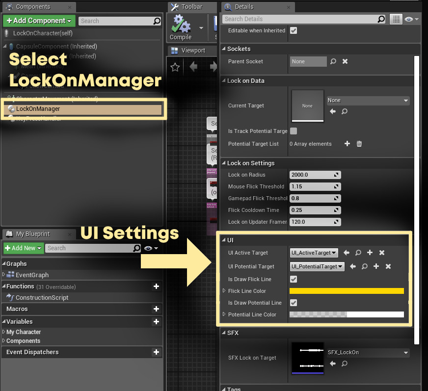

Lock-On 360 - UI Customization
Overview
Open your character blueprint, select the LockOnManager, then go to the Details tab.
The settings listed below can be found under the UI section.

Customizing the Active Target Indicator (Crosshair)
When the system found and locked on to a target, a basic crosshair will be shown on the screen.
This crosshair is a placeholder UI that can be found in Content/LockOn360/Blueprints/UI/UI_ActiveTarget.
It's made of a single image inside a UserWidget.
To modify the appearance, you can provide your own custom UserWidget, and set it as the value of UI_ActiveTarget.
Setting this value to None will ensure that no UI is shown when the active target is locked on to.
Customizing the Potential Target Indicator (Circle Indicator)
When the lock-on is activated, all potential targets that is currently visible on the screen will be marked using a white circle/halo indicator.
This halo is placed on all potential targets, including the currently active target.
Just like the crosshair, this is made from a UserWidget containing a single image, it can be found in Content/LockOn360/Blueprints/UI/UI_ActiveTarget.
To modify the appearance, you can provide your own custom user widget, and set it as the value of UI_PotentialTarget.
Setting this value to None will remove the UI from all of the potential targets, including the currently active target.
Customizing the Potential Target Lines
When a target is found, white lines will be shown coming from the currently active target, pointing towards all the other potential targets that is currently visible on screen.
You can turn these lines on/off by changing the value of IsDrawPotentialLine.
To change the line color and transparency, set the PotentialLineColor value according to your preference.
Customizing the Flick Indicator Line
By default, a momentary line visualizing the direction of your flick gesture will be shown when you move either your mouse or gamepad thumbstick.
This is mostly meant for debug purposes and can be safely turned off it not necessary.
You can turn this line on/off by changing the value of IsDrawFlickLine.
To change the line color and transparency, set the FlickLineColor value according to your preference.